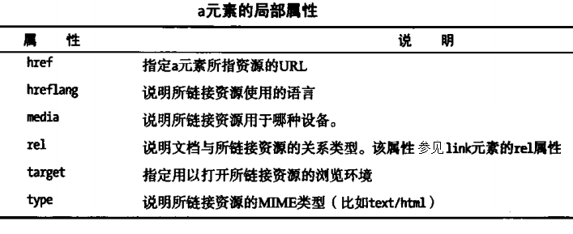
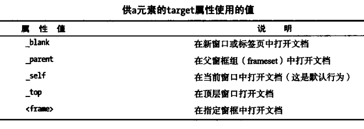
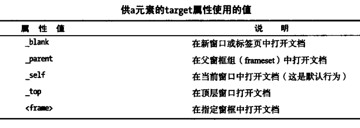

用于文字的标签元素
1、生成超链接
超链接需要使用a标签生成，H5中a标签有6个局部属性  1.1、链接类型(href属性设置) a标签可以链接到外部页面，使用绝对URL，如链接到百度首页：<a href="http://www.baidu.com">我要上百度</a> 也可以链接到本站其他页面(一般使用相对URL)，如链接到本页上层目录下的index.html页面：<a href="../index.html">返回上一层</a> 或链接到某一页面的指定位置：如链接到本页页尾：<a href="#Pagetail">拉到页尾</a>，这里需要在页尾位置设置一个锚点， 即标记某个元素的id或name属性为Pagetail(这个值可以自定义，和链接的#符号后面那个值对应即可) 其中#符号代表本页面，href值只设置为#是为空链接，点击这种空链接会回到页首。<a href="#">第一种空链接</a> 另一种空链接使用javascript实现，<a href="javascript:;">第二种空链接</a>，点击这种链接浏览器不会作出任何反应。 设置图片超链接：<a href="imgs/test.png"> </a>
链接到电子邮箱地址：<a href="mailto:test@qq.com">给我发邮件</a>
1.2、链接打开方式(target属性设置)

1.3、超链接样式设置
分为4类：没访问过的、可能即将发生访问(鼠标经过/悬停)、正在发生访问(鼠标按下)、已经发生过访问(鼠标抬起)
</a>
链接到电子邮箱地址：<a href="mailto:test@qq.com">给我发邮件</a>
1.2、链接打开方式(target属性设置)

1.3、超链接样式设置
分为4类：没访问过的、可能即将发生访问(鼠标经过/悬停)、正在发生访问(鼠标按下)、已经发生过访问(鼠标抬起)